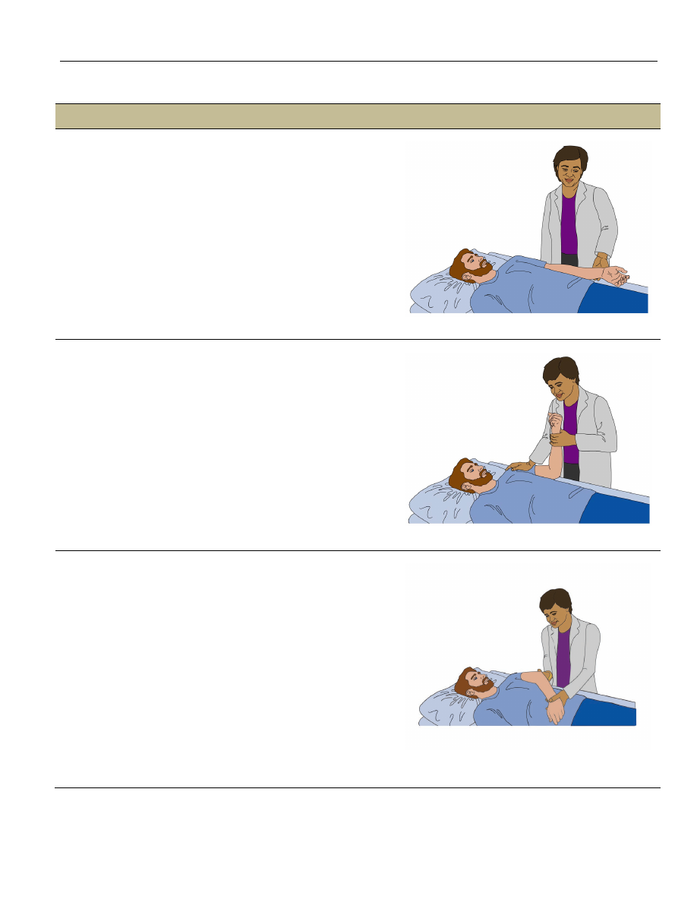
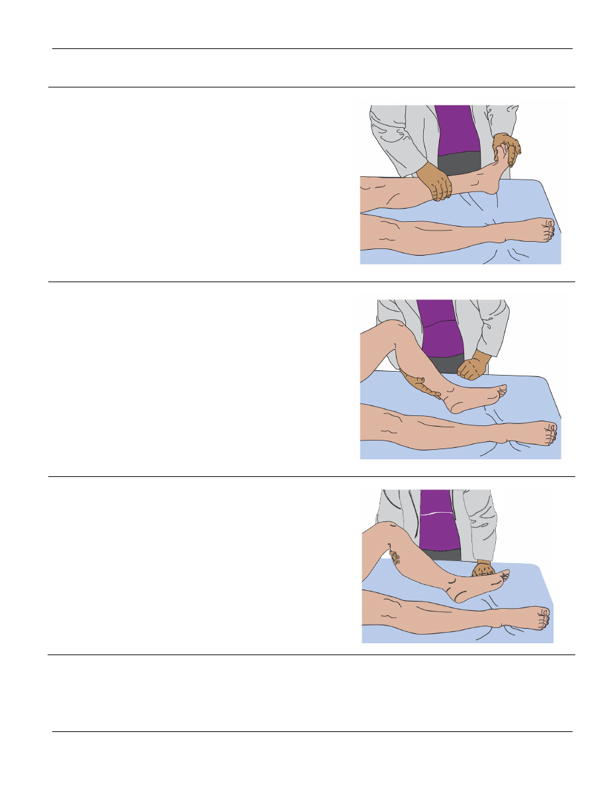

February 2020
page 1
International Standards for the Classification of Spinal Cord Injury
Motor Exam Guide
C5 Elbow Flexors
| Biceps Brachii, Brachialis
Grade 3
Patient Position:
The shoulder is in neutral rotation,
neutral flexion/extension, and neutral ab/adduction. The elbow is
fully extended, with the forearm in full supination. The wrist is in
neutral flexion/extension.
Examiner Position:
Support the wrist.
Instructions to Patient:
“Bend your elbow and try to reach your
hand to your nose.”
Action
: The patient attempts to move through the full range of
motion in elbow flexion.
Grades 4 & 5
Patient Position:
The shoulder is in neutral rotation, neutral
flexion/extension, and neutral ab/adduction. The elbow is flexed
to 90° and the forearm is fully supinated
.
Examiner Position:
Place a stabilizing hand on the anterior
shoulder. Grasp the volar aspect of the wrist and exert a pulling
force in the direction of elbow extension
.
Instructions to Patient:
“Hold your arm. Don’t let me move it.”
Action:
The patient resists the examiner’s pull and attempts to
maintain the elbow flexed at 90°.
Grade 2
Patient Position:
The shoulder is in internal rotation and
adducted with the forearm positioned above the abdomen, just
below the umbilicus. The elbow is in 30° of flexion. The forearm
and wrist are in neutral pronation/supination
.
Sufficient flexion of
the shoulder must be permitted to allow the forearm to
comfortably move over the abdomen.
Examiner Position:
Support the arm.
Instructions to Patient:
“Bend your elbow and try to bring your
hand to your nose.”
Action:
The patient attempts to move the elbow through a full
range of motion in elbow flexion.
International Standards for the Classification of Spinal Cord Injury
Motor Exam Guide
February 2020
page 2
Grades 0 & 1
Patient:
The patient is in the Grade 2 position with the shoulder
in internal rotation and adducted. The palm and ventral forearm
are positioned above the abdomen. The elbow is in 30° of flexion.
The forearm and wrist are in neutral pronation/supination.
Sufficient flexion of the shoulder must be permitted to allow the
forearm to comfortably move over the abdomen.
Examiner Position:
One hand supports the forearm while the
other hand palpates the biceps tendon in the cubital fossa. The
belly of the biceps brachii muscle may also be palpated or
observed for movement.
Instructions to Patient:
“Bend your elbow and try to bring your
hand to your nose.”
Action:
The patient attempts to move the elbow through a full
range of motion in elbow flexion.
C6 Wrist Extensors
| Extensor Carpi Radialis Longus, Extensor Carpi Radialis Brevis
Grade 3
Patient Position:
The shoulder is in neutral rotation, neutral
flexion/extension, and neutral ab/adduction. The elbow is fully
extended, the forearm is fully pronated, and the wrist flexed.
Examiner Position:
One hand supports the distal forearm to
allow the wrist to be pre-positioned in sufficient flexion for testing.
Instructions to Patient:
“Bend your wrist upwards. Lift your
fingers toward the ceiling.”
Action
: The patient attempts to extend the wrist through a full
range of motion.
International Standards for the Classification of Spinal Cord Injury
Motor Exam Guide
February 2020
page 3
Grades 4 & 5
Patient Position:
Same as Grade 3, except the wrist is
fully extended.
Examiner Position
: Grasp the distal forearm to stabilize the
wrist. Apply pressure across the metacarpals in a downward
direction toward flexion and ulnar deviation.
The force applied should be angled toward the ulnar side of the
wrist rather than directly downward, since it is the radial wrist
extensors that are being tested
.
Instructions to Patient
: “Hold your wrist up. Don’t let me
push it down.”
Action:
The patient resists the examiner’s push and attempts to
maintain the wrist in the fully extended position.
Grades 0, 1 & 2
Patient Position
: Position the patient with
the arm resting on the
exam table. The shoulder is in neutral flexion/extension, neutral
rotation, and neutral ab/adduction. The elbow is fully extended.
The forearm is in neutral pronation-supination and the wrist fully
flexed
As per the picture, the patient may also be positioned with the
shoulder in slight flexion, internal rotation, and abducted, with the
patient’s arm above the abdomen. The elbow is flexed to 90° and
the forearm is in full supination. The wrist is flexed.
Examiner Position
: Support the forearm and ask the patient to
bend the wrist backwards into extension. For trace function,
palpate the radial wrist extensors just proximal to the wrist, on
the radial aspect of the distal forearm. Observe the muscle belly
for movement.
Instructions to Patient
: “Bend your wrist backwards.”
Action:
The patient attempts to extend the wrist though a full
range of motion in wrist extension.
C6 Common Muscle Substitution
Wrist extension can be mimicked by forearm supination and the use of gravity. The examiner needs to make sure the
forearm is stabilized and is in proper position.
International Standards for the Classification of Spinal Cord Injury
Motor Exam Guide
February 2020
page 4
C7 Elbow Extensors
| Triceps
Grade 3
Patient Position:
The shoulder is in neutral rotation, neutral
ab/adduction, and 90°of flexion. The elbow is fully flexed with the
palm of the hand resting by the ear.
Examiner Position:
Support the upper arm.
Instructions to Patient
: “Straighten your arm.”
Action
: The patient attempts to move through the full range of
elbow extension.
Grades 4 & 5
Patient Position:
Same as Grade 3, except the elbow is in
45° of flexion.
Examiner Position
: Support the upper arm. Grasp the wrist
and apply resistance to the distal forearm in the direction of
elbow flexion.
Instructions to Patient:
“Hold this position. Don’t let me bend
your elbow.”
Action:
The patient resists the examiner’s pressure and attempts
to maintain the position of the elbow in 45° of flexion.
Grade 2
Patient Position:
Support the patient’s arm under the elbow and
the wrist. The shoulder is in internal rotation, with the forearm
positioned above the abdomen. The forearm is in neutral
pronation/supination. The elbow is fully flexed. When checking
Grade 2, sufficient flexion of the shoulder must be permitted to
allow the forearm to clear and move over the chest and abdomen.
Examiner Position
: Support the patient’s arm under the elbow
and wrist.
Instructions to Patient:
“Straighten your arm.”
Action:
The patient attempts to move through the full range of
elbow extension.
International Standards for the Classification of Spinal Cord Injury
Motor Exam Guide
February 2020
page 5
Grades 0 & 1
Patient Position:
Maintain the Grade 2 position with
the shoulder
in internal rotation, and the forearm positioned above the
abdomen. The forearm is in neutral pronation/supination and the
elbow is in 30° of flexion.
Examiner Position:
Support the arm. For trace function,
palpate the distal triceps at its insertion on the olecranon.
The belly of the triceps muscle may also be palpated and
observed for movement.
Instructions to Patient
: “Straighten your arm.”
Action:
The patient attempts to fully extend the elbow.
C7 Common Muscle Substitution
Elbow extension can be mimicked by externally rotating the shoulder, by quickly flexing the elbow and then relaxing,
and with spasticity of the triceps. These substitutions can be minimized by maintaining the correct position for testing,
correct instructions to the patient, and avoiding elbow flexion. Palpation of the triceps should be done to confirm the
patient is using the correct muscle for the test.
C8 Long Finger Flexors
| Flexor Digitorum Profundus
Grade 3
Patient Position:
The shoulder is in neutral rotation, neutral
flexion-extension, and neutral ab/adduction. The elbow is fully
extended with the forearm fully supinated. The wrist is in neutral
flexion-extension. The metacarpal phalangeal (MCP) and
proximal interphalangeal joints (PIP) are stabilized in extension.
Examiner Position
: Using two hands grasp the patient’s hand
and stabilize the wrist in neutral. Secure the PIP and MCP joints
in extension with both hands while isolating the middle finger for
testing. Stabilize the volar aspect of the 3
rd
middle phalanx with
the thumb of the opposite hand.
As an alternate method, one hand may be used to stabilize
instead of two, with the patient’s hand fully supinated on the
bed/mat. The PIP and MCP joints are stabilized as previously
described and securing the middle phalanx, and the examiner
assuring wrist tenodesis is avoided with forearm stabilization.
Instructions to Patient:
“Bend the tip of your middle finger.”
Action:
The patient attempts to flex the distal interphalangeal
(DIP) joint through the full range of motion in flexion.
International Standards for the Classification of Spinal Cord Injury
Motor Exam Guide
February 2020
page 6
Grades 4 & 5
Patient Position:
The same as Grade 3, except the DIP joint is
fully flexed.
Examiner Position:
Stabilize the wrist, MCP and PIP joints as in
Grade 3. Apply pressure with the tip of the finger or thumb
against the distal phalanx of the patient’s middle finger.
Instructions to Patient:
“Hold the tip of your finger in this bent
position. Don’t let me move it.”
Action
: The patient attempts to maintain the fully flexed position
of the DIP joint, and resist the pressure applied by the examiner
in the direction of finger extension.
Grades 0, 1 & 2
Patient Position:
The shoulder is in neutral rotation, neutral
flexion-extension, and neutral ab/adduction. The elbow is fully
extended. The forearm is in neutral pronation-supination and the
wrist in neutral flexion-extension. The MCP and PIP joints are
stabilized in extension.
Examiner Position
: Stabilize the wrist in neutral to avoid
tenodesis, and the MCP and PIP joints are in extension. For trace
function, palpate the tendons of the long finger flexors or observe
the muscle belly for movement.
Instructions to Patient:
“Bend the tip of your middle finger.”
Action
: The patient attempts to flex the distal interphalangeal
(DIP) joint through the full range of motion in flexion.
C8 Common Muscle Substitution
When testing Grades 1 through 3, the wrist must be carefully stabilized. Involuntary movement of the distal phalanx
can occur in the presence of active wrist extension. This tenodesis movement could be misinterpreted as voluntary
contraction of the long finger flexors.
While testing Grades 4 and 5, the proximal phalanges must be well stabilized. This will avoid misinterpretation of
distal phalanx movement caused by contraction of the hand intrinsics or the flexor digitorum superficialis.
International Standards for the Classification of Spinal Cord Injury
Motor Exam Guide
February 2020
page 7
T1 Small Finger Abductor
| Abductor Digiti Minimi
Grade 3
Patient Position:
The shoulder is in internal rotation, neutral
ab/adduction, and at 15° flexion. The elbow is at 90° flexion, the
forearm is pronated, and the wrist is in neutral flexion/extension.
Examiner Position
: Support the patient’s hand, taking
care to assure that the MCP joints are stabilized to
prevent hyperextension.
Instructions to Patient:
“Move your little finger away from your
ring finger, or spread your fingers apart.”
Action:
The patient attempts to move the little finger through the
full range of motion in abduction.
Grades 4 & 5
Patient Position:
Same as Grade 3, except the little finger
is fully abducted.
Examiner Position
: Support the patient’s hand, taking care to
assure that the MCP joints are stabilized to prevent
hyperextension. Use the index finger to apply pressure against
the side of the patient’s distal phalanx.
Instructions to Patient:
“Hold your little finger away from your
ring finger. Don’t let me push it in.”
Action:
The examiner exerts a pushing force against the side of
the distal phalanx, and the patient attempts to resist the
examiner’s force and keep the little finger fully abducted.
International Standards for the Classification of Spinal Cord Injury
Motor Exam Guide
February 2020
page 8
Grades 0, 1 & 2
Patient Position:
The shoulder is in neutral rotation, neutral
flexion/extension, and neutral ab/adduction. The elbow is in full
extension. The forearm is in full pronation and the wrist in neutral
flexion-extension. The MCP joint is stabilized.
An alternate position is the same as used for testing of Grade 3,
however with the elbow in 90° of flexion, the forearm and wrist
are in neutral flexion/extension (or palm of hand is flat on the
abdomen), and the MCP joint is stabilized to avoid MCP
extension.
Examiner Position:
Stabilize the dorsal wrist and hand by
pressing down lightly on the back of the hand. Be sure that the
MCP joints are stabilized to prevent hyperextension. Another
method is to stabilize the wrist, but leave the hand flat on the bed,
further stabilizing the MCP joints. Palpate the abductor digiti
minimi muscle and observe the muscle belly for movement.
Instructions to Patient: “
Move your little finger away from your
ring finger or spread your fingers apart.”
Action:
The patient attempts to abduct the little finger through the
full range of motion.
T1 Common Muscle Substitution
Finger extension can mimic 5th finger abduction. Proper positioning and stabilization will minimize this error.
L2 Hip Flexors
| Iliopsoas
Grade 3
Patient Position:
The hip is in neutral rotation, neutral
abduction/adduction, with both the hip and knee in 15° of flexion.
Examiner Position:
Support the dorsal aspect of the distal thigh
and leg. Do not allow flexion beyond 90° when examining acute
thoraco-lumbar injuries due to the kyphotic stress placed on the
lumbar spine.
Instructions to Patient:
“Lift your knee towards your chest as far
as you can, trying not to drag your foot on the exam table.”
Action:
The patient attempts to flex hip to 90° of flexion.
Note
: When examining a patient with an acute traumatic lesion
below T8, the hip should not be allowed to flex passively or
actively beyond 90°. Flexion beyond 90° may place too great a
kyphotic stress on the lumbar spine.
International Standards for the Classification of Spinal Cord Injury
Motor Exam Guide
February 2020
page 9
Grades 4 & 5
Patient Position:
The hip is in 90° of flexion with the
knee relaxed.
Examiner Position:
Brace the anterior superior iliac spine
on
the opposite side and place a hand on the distal anterior
thigh, just above the knee. Pressure is applied in the direction of
hip extension
Instructions to patient:
“Hold your knee in this position. Don’t
let me push it down.”
Action:
The patient attempts to resist the examiner’s push and
keep the hip flexed at 90°.
Note
: When examining a patient with an acute traumatic lesion
below T8, the hip should not be allowed to flex passively or
actively beyond 90°. Flexion beyond 90° may place too great a
kyphotic stress on the lumbar spine.
Grade 2
Patient Position
: Place the patient in the gravity eliminated
position with the hip in external rotation and 45°of flexion. The
knee is flexed at 90°.
Examiner Position
: Support the leg at the knee and ankle.
Instructions to Patient:
“Try to bring your knee out to the side,”
or “Try to flex your hip toward the side of the body.”
Action
: The patient attempts to move through the full range of
motion in hip flexion.
International Standards for the Classification of Spinal Cord Injury
Motor Exam Guide
February 2020
page 10
Grades 0 & 1
Patient Position
: Place the patient in the Grade 2 gravity
eliminated position.
Examiner Position:
Support the thigh to eliminate friction while
palpating the superficial hip flexors just distal to the anterior
superior iliac spine.
Instructions to Patient:
Ask the patient to “move your knee out
to the side.”
Action
: The patient attempts to flex the hip out to the side.
Note
: For Grade 1, the examiner is actually palpating the more
superficial hip flexors, i.e. sartorius and rectus femoris rather than
the iliopsoas. The insertion of the iliopsoas is too deep to be
seen or felt when it possesses only Grade 1 strength.
L2 Common Muscle Substitution
Any muscle of the trunk that can elevate or rotate the pelvis can trick the examiner into thinking that the hip flexor
muscles are active. This could include the rectus abdominus, the adductor muscles, obliques, or the quadratus
lumborum. With accurate palpation, correct patient instructions, and observation of any trunk movement, this
substitution can be avoided.
L3 Knee Extensors
| Quadriceps
Grade 3
Patient Position:
The hip is in neutral rotation, neutral
adduction/abduction and 15° of flexion. The knee is in 30°
of flexion.
Examiner Position
: Place the arm under the tested knee and
rest the hand on the patient’s distal thigh. This causes the tested
knee to flex to approximately 30°.
Instructions to Patient:
“Straighten your knee.”
Action:
The patient attempts to straighten the knee through the
full range of motion in extension.
International Standards for the Classification of Spinal Cord Injury
Motor Exam Guide
February 2020
page 11
Grades 4 & 5
Patient position:
Same as Grade 3, except the knee is in 15°
of flexion.
Examiner Position:
Place the arm under the tested knee and
rest the hand on the patient’s opposite thigh. Grasp the leg to be
tested, just proximal to the ankle.
Instructions to Patient:
“Hold this position. Don’t let me bend
your knee.”
Action
: Examiner exerts downward force into knee flexion while
the patient attempts to hold the knee in 15 degrees of flexion.
Grade 2
Patient Position
: The leg is in the lower extremity gravity
eliminated position of hip in external rotation and 45° of flexion.
The knee is flexed at 90°.
Examiner position:
Support the distal thigh and ankle.
Instructions to Patient:
“Straighten your knee.”
Action:
The patient attempts to move through the full range
of motion.
International Standards for the Classification of Spinal Cord Injury
Motor Exam Guide
February 2020
page 12
Grades 0 & 1
Patient Position
: Place the patient in the Grade 2 position.
Examiner Position
: Support the distal thigh and leg. Palpate the
patellar tendon or the belly of the quadriceps muscle for trace
function. The muscle belly may also be observed for movement.
Instructions to Patient
: “Straighten your knee.”
Alternate Position:
Hip in neutral rotation and
abduction/adduction, and hip and knee in 15° flexion, with the
examiners hand under the back of the knee. Ask the patient to
push the back of the knee downward into the exam table, while
palpating for a trace contraction of the quadriceps muscle.
Action:
The patient attempts to straighten the knee.
International Standards for the Classification of Spinal Cord Injury
Motor Exam Guide
February 2020
page 13
L4 Ankle Dorsiflexors
| Tibialis Anterior
Grade 3
Patient Position:
The hip is in neutral rotation, neutral
adduction/abduction, with the hip and knee slightly flexed. The
hand may be placed under the knee of the tested leg to
incorporate slight flexion. The ankle is plantarflexed
.
Examiner Position:
At the patient’s side. Support the leg under
the knee and ankle.
Instructions to Patient:
“Bend your ankle to pull your foot and
toes up toward your head."
Action:
The patient attempts to dorsiflex ankle through a full
range of motion.
Grades 4 & 5
Patient Position:
Same as Grade 3, except the ankle is
fully dorsiflexed.
Examiner Position:
In the Grade 3 position, place
the hand on the dorsum of the foot and apply pressure downward
in the direction of plantarflexion.
Instructions to Patient
: “Hold your ankle in this position. Don’t
let me push it down.”
Action
: The patient attempts to resist the examiner and maintain
the ankle in full dorsiflexion
.
Grade 2
Patient Position:
Place the patient in the gravity eliminated
position with the hip in external rotation and 45°of flexion. The
knee is flexed to 90°, and the ankle is fully plantar flexed.
Examiner Position
: Support the leg under the knee and ankle.
Instruction to Patient:
“Lift the toes upward toward the head,
bending the ankle upward.”
Action
: The patient attempts to dorsiflex ankle through the full
range of motion
.
International Standards for the Classification of Spinal Cord Injury
Motor Exam Guide
February 2020
page 14
Grades 0 & 1
Patient Position
: Place the patient in the Grade 2 position.
Examiner Position
: Palpate the proximal lower leg over the
tibialis anterior muscle belly or on the tendon of the tibialis
anterior muscle as it crosses the anterior ankle. Observe the
muscle belly for movement.
Instructions to Patient
: “Bring your toes upward toward your
head, letting your ankle bend.”
Action:
The patient attempts to dorsiflex the ankle.
L4 Common Muscle Substitution
Ankle dorsiflexion can be mimicked by the long toe extensors, particularly the extensor hallucis longus; therefore, be
sure to look for L4 as active ankle dorsiflexion movement, and not just toe extension. Correct stabilization and
observation along with proper patient instruction and palpation can eliminate this substitution.
L5 Long Toe Extensors
| Extensor Hallucis Longus
Grade 3
Patient Position:
The hip is in neutral rotation, neutral
adduction/abduction, and neutral flexion/extension. The knee is
fully extended.
Examiner Position
: At the patient’s side. Support the foot.
Instructions to Patient:
“Lift your big toe upwards toward
your knee.”
Action:
The
patient attempts to move the great toe through the
full range of motion.

International Standards for the Classification of Spinal Cord Injury
Motor Exam Guide
February 2020
page 15
Grades 4 & 5
Patient Position:
Same as Grade 3, except the toe is
fully extended.
Examiner Position:
At the patient’s side. Place the thumb on the
distal phalanx of the great toe and apply pressure downward in
the direction of toe flexion.
Instructions to Patient:
“Keep your toe lifted upward. Don’t let
me push it down.”
Action:
The patient attempts to resist the examiner and maintain
the great toe in full extension.
Grade 2
Patient Position:
The leg is in the gravity eliminated position with
the hip in external rotation and 45° of flexion. The knee is flexed
to 90°. The ankle and long toe are in a relaxed neutral position.
Examiner Position:
Support the leg under the knee and ankle.
Instructions to Patient
: “Lift your big toe upwards toward
the knee.”
Action
: The patient attempts to extend the great toe through the
full range of motion
.
Grades 0 & 1
Patient Position
: Place the patient in the Grade 2 position.
Examiner Position
: Support the leg and palpate the extensor
tendon of the long toe for trace function.
Instructions to Patient:
“Lift your big toe upwards toward
your knee.”
Action:
The patient attempts to extend the great toe.

International Standards for the Classification of Spinal Cord Injury
Motor Exam Guide
February 2020
page 16
L5 Common Muscle Substitution
Great toe extension can be facilitated by plantarflexion. If a patient actively plantar flexes the entire foot, passive
extension
of extensor hallucis longus can be achieved during the active plantarflexion of the foot. This is a type of
tenodesis for the foot and can be avoided by proper stabilization to eliminate foot and ankle movement.
Another possible muscle substitution for L5 can occur when the patient actively flexes the big toe and then relaxes.
Passive relaxation into a neutral position can be mistakenly perceived as active extension.
S1 Ankle Plantarflexors
| Gastrocnemius, Soleus
Grade 3
Note
: Checking for Grades 3-5 is significantly different
from what is described in standard manual muscle testing texts.
This departure is required for examining patients in the
supine position
.
Patient Position:
The hip is in neutral rotation and 45° of flexion, with the knee fully
flexed and ankle in full dorsiflexion.
Examiner Position
: Place one hand behind the knee to assist in
stabilizing the leg. The other hand is positioned under the sole of
the patient’s foot, pushing the foot into dorsiflexion. The patient’s
heel remains resting on the exam table.
Instructions to Patient: “
Push your foot down into my hand and
lift your heel off the table.”
Action:
The patient pushes the forefoot downward into the
examiner’s hand and raises the heel off the exam table, through a
full range of motion into plantarflexion.
International Standards for the Classification of Spinal Cord Injury
Motor Exam Guide
February 2020
page 17
Grades 4 & 5
Patient position:
The hip is in neutral rotation, neutral flexion-
extension, and neutral ab/adduction. The knee is fully extended
and the ankle is in full plantarflexion.
Examiner Position:
Place one hand on the distal lower leg while
the other hand grasps the foot across the plantar surface of
metatarsals. Apply pressure on the bottom of the foot in the
direction of dorsiflexion.
Instructions to patient:
“Hold your foot pointed down. Don’t let
me push it up.”
Action
: Examiner gives pressure on the plantar aspect of the
metatarsals in the direction of dorsiflexion. The patient attempts
to resist the examiner by maintaining the foot and ankle in
full plantarflexion.
Grade 2
Patient Position:
The leg is in the gravity eliminated position with
the hip in external rotation and approximately 45
o
of flexion. The
knee is flexed to approximately 90
o
. The ankle is supported in full
dorsi flexion.
Examiner Position:
Support the lower leg under the knee and
ankle. For trace function palpate either the gastrocnemius muscle
belly or the achilles tendon, or observe the muscle belly for
movement.
Instructions to Patient:
“Point your toes downward like a
ballet dancer.”
Action
: The patient attempts to plantar flex the foot through a full
range of motion.
Grades 0 & 1
Patient Position:
Place the patient in the Grade 2 position.
Examiner Position:
Support the lower leg under the knee and
ankle. For trace function palpate either the gastrocnemius muscle
belly or the achilles tendon, or observe the muscle belly for
movement.
Instructions to Patient:
“Point your toes downward like a
ballet dancer.”
Action
: The patient attempts to plantar flex the ankle.
S1 Common Muscle Substitution
Visually monitor the hip flexors to assure that these muscles are not being used to facilitate plantarflexion.